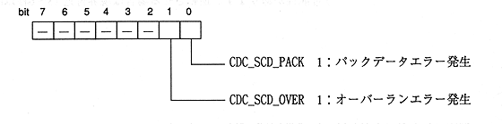

Title | Function | Function Name [S-] | No |
Format Sint32 CDC_TgetScdQch (Uint16 * qcode) Input None Output qcode: Subcode Q information (5 words) …… See data specification (Subcode) Function value Returns an error code. Function Acquires subcode Q channel information (10 bytes other than CRC).
Title | Function | Function Name [S-] | No |
Format Sint32 CDC_TgetScdRwch (Uint16 * rwcode, Sint32 * scdflag) Input None Output rwcode: Subcode R to W information (12 words) …… See data specification (Subcode) : scdflag: Subcode flag (lower 8 bits are valid) Function value Returns an error code. Function Acquires subcode R to W channel information (24 bytes for one pack).
Indicates the error status of the extracted subcodes R to W information (pack data).
